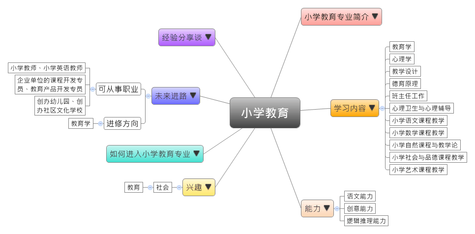

- 专业大观园
-

- 专业介绍
-
什么是小学教育专业？
小学教育专业在于培养学生成为现代教育观念的小学教师及教育科研、各级教育行政管理人员。在职场上，毕业生可以从事小学数学教师、小学语文教师、教育咨询师、小学课程顾问等；在生活中，具备小学教育专业能发挥善于沟通的专长，以及透过寓教于乐的方式，能有效激发小朋友的学习兴趣，并帮助其理解较为困难的内容。
小学教育专业培养一定的教育科研能力和良好综合素质，使学生能适应小学教育改革发展，让学生的综合素质概括为一个核心、两种水平、六种能力。即：以师德为核心开展教育，努力使学生达到本科层次学术水平和小学教师的专业化水平，具备教育能力、教学能力、组织管理能力、活动指导能力、教学研究能力、学习发展能力。

小学语文课程教学实习 班主任指导学生写字
- 学习内容
-
小学教育专业学生主要学习教育的基本理论和知识，由于注重教学应用能力，学生须接受讲、写、算、创、教、用、作、弹、唱、跳、画、练十二项的专业训练。
本专业学习方向通常会分为三方向：文科、理科还有英语，学校也有开设教育咨询或学习管理等课程，为学生未来就业做好准备。小学教育专业主干课程有：教育学、心理学、逻辑学、教学设计、德育原理、班主任工作、心理卫生与心理辅导、汉语基础、中国历代文学作品选、写作、儿童文学、小学语文课程教学、小学数学课程教学、小学自然课程与教学论、小学社会与品德课程教学、小学艺术课程教学……等。
本专业可以习得的知识与获得之能力、技能列点：第一，能够用比较标准的普通话进行朗读、讲课和交谈；第二，掌握教育、教学、交谈的口语特点，能做到说“准”教材、说“明”教法、说“会”学法、说“清”教学意图、说“清”练习层次；第三，帮助学生通过说课技能的训练，具有演示教材与教学的能力。
- 能力
-
小学教育专业学生，需具备以下能力：
相关性向能力 说明 语文能力 拥有较强的口说能力
具有儿童文学修养和鉴赏能力
能以文字作品传达自己的教学理念创意能力 具有情感关怀性质的能力
能运用教育理论开设教育创意课程逻辑推理能力 具有抽象思考如何教学的能力
能够以分析推理的方式进行思辨
- 兴趣
-
若你对下列活动或事物有高度兴趣，可考虑进入小学教育专业学习：
社会 教育 喜欢关心并帮助他人成长
倾向从事关怀性质的工作
对说明与服务他人等活动感兴趣
善于沟通、协助并引导他人学习
- 如何进入此专业
-
下面列举开设小学教育专业的211工程重点大学院校：
- 未来进路
-
可从事职业
在人们传统的思维中，小学教育的就业方向主要是去学校做老师，事实上有相当一部分学生毕业后并没有从事小学教育，而是应聘到幼儿园工作，还有部分毕业生自己创办幼儿园、创办小区文化学校，走上创业之路。小学教育专业毕业生就业方向已呈多元化趋势。小学教育专业在工作职场上皆能发挥口语清晰、善于察觉情绪与关怀他人等专长：
行业 职业 教育单位 小学英语教师、小学教师、幼儿教师 企业单位 课程开发专员、教育产品开发专员 自我创业 创办幼儿园、创办小区文化学校 进修方向以下列举小学教育专业毕业生可以继续修读之学科门类、一级学科与硕士点：
学科门类 一级学科 硕士点 教育学 教育学 教育学原理、学前教育学、少年儿童组织与思想意识教育、心理健康教育 教育（专业硕士） 小学教育、学科教学、学校课程与教学、现代教育技术
- 经验分享谈
-
拿起书本是教师，放下书本是妈妈的阳光小学创建者——陈万霞
陈集镇地处江淮分水岭，人口密集，外出务工人员多，80%的孩子是留守儿童。小魏村是陈集镇一个偏僻的村落，陈万霞原是小魏村小学的一个民办教师。
2005年小魏小学在教育布局调整中撤销，从教15年的陈万霞离开了小魏小学。但是，陈万霞心里却一直牵挂着小魏小学的孩子们。2006年8月，陈万霞从自己供职一年的职业中学辞职回乡，在当地政府和群众支持下，在小魏小学基础上创建留守儿童寄宿学校，并改名阳光小学。
“老师拿起书本是教师，放下书本是妈妈。”陈万霞说。在这里工作的老师，除了师范院校的毕业生外，还有从事多年教师工作的民办教师。“在这里学校是孩子们的家，老师就是孩子们的妈妈。”陈万霞的学校一路走来，颇受附近农民欢迎，学生人数不断增加，办学规模也不断扩大。现在的学校，除了一栋教学楼外，还有一栋宿舍楼，食堂、图书馆、篮球场和小的运动场也都有了。最高峰时学校的学生人数有300多人。
2008年，陈万霞因创办阳光小学被评为“合肥市十大新闻人物”。2011年，陈万霞和她的留守儿童学校多次被央视关注，之后她被评为“中国好人”、“中国最美乡村教师”，并当选合肥市人大代表。
然而，最近陈万霞的留守儿童学校人数锐减，现在只有130人左右，办学的压力也随之而来。陈万霞说“过去几年翻盖教学楼和宿舍楼将所有的积蓄都投进去了，还欠了30多万外债。”“学校现在确实艰难。不过，只要孩子们在，我都会坚持下去！”【资料来源：两会特刊·行动者 人大代表陈万霞和她的留守儿童学校】